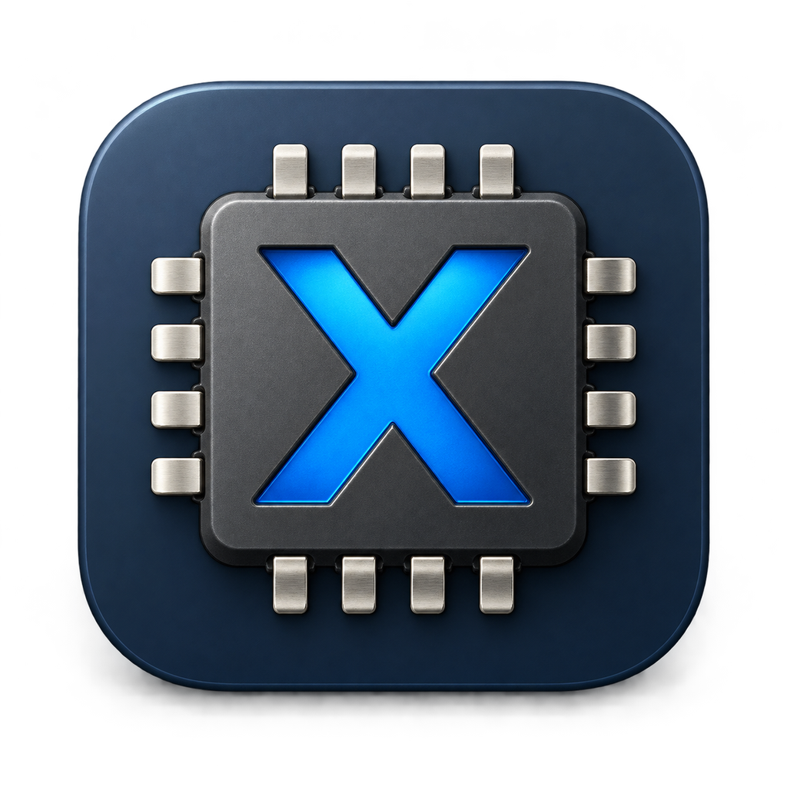

Layout preview. In the DMG, both icons are real Finder items. The Applications folder and window chrome follow your Mac’s appearance. This preview does not install the app. Copy first-launch commands.